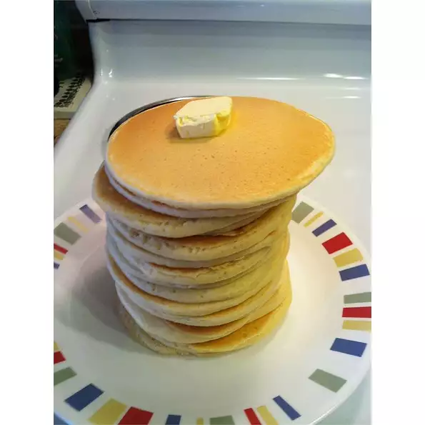

Pancakes

Description
This is a basic home made pancake recipe. Fruits are a good addition to in
Ingredients
- 2 Large eggs
- 2 teaspoons white shugar
- 2 cups all-purpose flour
- 1 pinch salt
- 2 teaspoons baking powder
- 2 cups milk
Steps
- Beat eggs until fluffy;
- Beat sugar and salt;
- In a separate bowl, stir flour and baking powder together;
- Stir milk and flour mixture alternately into eggs, starting and ending with milk.
- Heat a frying pan over medium high heat;
- Pour or scoop the batter onto the pan, using approximately 1/4 cup for each pancake;
- When tiny holes appear all over the uncooked side turn the pancake;
- Brown on both sides and serve hot.